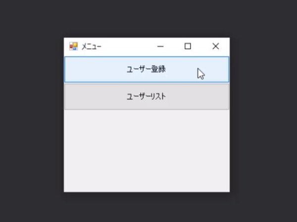
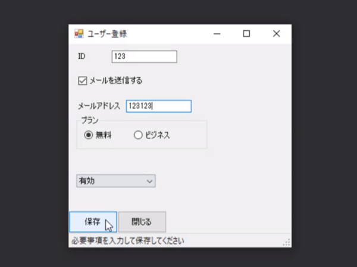
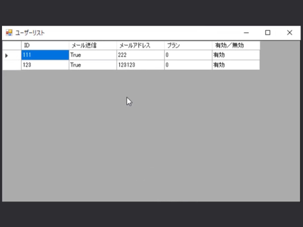

ユーザー登録システム
WindowsForms
説明 :

C#でWindowsFormsを使った簡単なユーザー登録画面を作りました。WindowsFromsを初めて使うので使い勝手になれるために作ったので 本当に簡単な機能だけ実装して完成としています。まず立ち上げるとユーザー登録画面とユーザーリスト表示画面が表示できるボタンが現れます。

こちらがユーザー登録画面です。設定するIDやメールアドレス、プラン等を入力して登録できるようになっています。 テキストボックスの他、直観で操作できるようなボタンやラジオボタン、コンボボックスを実装しています。

こちらがユーザーリスト画面です。ユーザー登録画面で登録した情報が表示できるようになっています。
使用技術 :
メインページへ